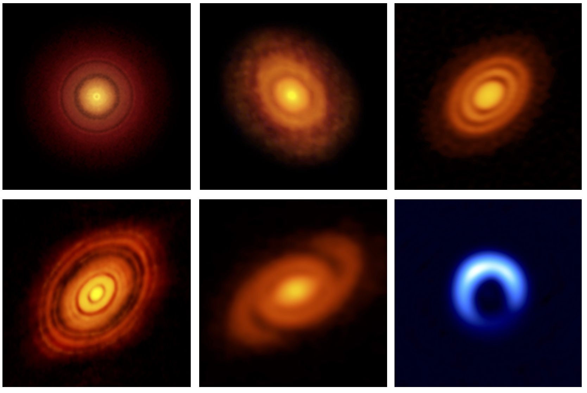

Asymmetries in planet forming discs
In the last few years we have been able to observe the planet forming environments (protoplanetary discs) with unprecedented resolution and sensitivity. This revolution has primarily been driven by the ALMA telescope, and has produced spectacular images of protoplanetary discs.

Caption: ALMA images of planet forming discs, image credit ESO/NAOJ/NRAO.
One of the mysteries is the origin of highly asymmetric discs (bottom right panel of the Figure). An explanation is that these discs contain anti-cyclonic vortices which are trapping large quantities of small solid particles (mm-sized dust particles). However, the question remains: how do you get large scale vorticies in protoplanetary discs? In Owen and Kollmeier 2017, we suggested that thermal feedback from a forming planet could provide the necessary source of vorticity to form large scale vorticies (see video below). This project will involve developing this model further, including more detailed planet formation calculations and computer simulations of vortex formation and destruction. A detailed description of the project can be found here.